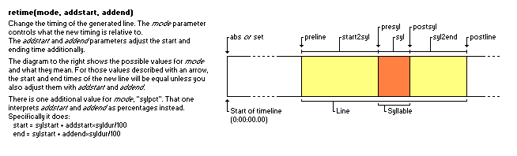

在code区和code行的Lua代码运行在一个隔离的全局环境，这让它们不会意外地影响到主脚本函数。
为了后期使用，你可以把你的数据存放到这个环境里，例如先在code行预先计算一些数值，然后后期再用code区把它们添加进模板。 这个环境也可以包含许多预先定义的变量和函数，它们可以让特效模板书写起更加方便。
要知道，代码执行环境的内容和内联变量是没有什么关系的，这一点很重要。你不能通过改变代码执行环境里面的东西来改变一个内联变量的值；当然，你也不能添加新的内联变量。然而，你可以创造并且重新定义代码执行环境里面的内容。
代码执行环境包含一些指向当正在处理的行和音节结构的变量，这些变量就是把 karaskel 中的数据原封不动地拿了出来。.
你应该将除了 line 以外的部分作为只读的信息进行处理。如果你改变了其中某些变量的值，卡拉OK模板执行器脚本可能会无法正确工作。
syl 相同，在模板含有 char 或 multi 修饰语时，它将会是原始音节 (如果 syl == basesyl 为真，那么当前模板行既不是 char 也不是 multi)res_x 和 res_y ，来表示脚本分辨率。在处理新一行之前，上述所有变量(除了 meta )都会被重设为 nil 。当处理进入新的一个阶段，它们会被赋予相关的值。
这意味着，在像 pre-line 这样的模板中只存在 line 和 orgline ，而其中的 syl 和 basesyl
都是 nil。在 code once 模板中，除了 meta 之外的所有变量都是 nil。
string库 和 math库 这两个 Lua 标准库已经被导入到了执行环境中，因为它们十分常用。
通过使用 _G (下划线+大写G)，你也可以访问到 kara-templater 的主要执行环境，和其余的 Lua 标准库 loaded
modules。比如， _G.table.sort 实际上调用的是 table.sort 函数。查看 Lua 5.2
手册 来获取更多有关 Lua 标准库的信息。
为了向后兼容，
(karaskel.lua,
unicode.lua 和
utils.lua) 会被自动载入环境，且可通过 _G 访问。其余所有的模块/库需要通过单独在 code 行使用 require 来导入。
另有自指变量 tenv 来指向执行环境本身。这意味着 tenv.tenv == tenv 会得到 true 的值。
这些函数可以帮助我们对输出的行做更复杂的修饰。 (
line ) 也不可避免地使得结果变得复杂。
摘要: retime(mode, startadjust, endadjust)

This function is usually used once in a template in a code block by itself. It adjusts the start and end time of the output line in various ways.
The mode parameter determines how the start and end times of the line are changed, it must be a string with one of the following values. Because it must be a string, the name of the mode must be enclosed in quotation marks!
The startadjust and endadjust parameters slightly change meaning based on the mode, but generally is a number of milliseconds added to the "base" time controlled by the mode.
Possible _mode_s:
There is also a special mode:
Be careful with the retime function on line templates. If you use it
directly on a line template it will probably not do what you want. You
should only use it on pre-line, syl and furi templates. You should
also only use it once in each template.
The retime function always returns the empty string ("") which will
cause it to output nothing when used in code blocks, but still evaluate to
true if used in boolean expressions.
template syl: !retime("preline", -1000, 0)!{\pos($scenter,$smiddle)\an5\fscx0\fscy0\t(\fscx100\fscy100)}
This creates a kind of “pop-in” effect for the syllables that lasts 1
second (1000 milliseconds) before the actual line timing. The two important
things to code: Quotation marks around "preline" and that the start
offset is negative, -1000, because the start time needs to be moved
backwards.
template syl: !retime("syl", 0, 0)!{\pos($x,$y)\t(\fscx360)}
Makes the syllable spin around itself during its highlight. Unless you also
have syl templates retimed to start2syl and syl2end the
syllable will only be visible during its highlight. Note how retiming a
syllable line to just the syllable time makes it unneeded to put start and
end times in the \t tag, as they default to the duration of the entire
line and here the duration of the line is the duration of the syllable.
template syl: !retime("sylpct", 0, 50)!{\move($x,$y,$x,!$y-10!)}
template syl: !retime("sylpct", 50, 100)!{\move($x,!$y-10!,$x,$y)}
These two templates together makes the syllable move 10 pixels upwards
during the first half of its highlight and back down during the last half.
Using retime is an easy way to get multiple \move tags to affect the
same syllable; there can only be one \move tag on one line, but if you
split the line into many “chained” times you can create an effect of the
same syllable moving in several directions.
Synopsis: relayer(newlayer)
Change the Layer field of the generated line to newlayer.
Note: If you want a template to always generate lines with a static layer number, you do not need to use this function. You can just set the Layer field on the template line, and it will transfer to the generated lines. This function is only needed when the layer number is dynamic.
template syl: !relayer(syl.i*5+20)!
Each syllable generated from the line gets a progressively higher layer number. The first syllable gets in layer 25, the second in layer 30 and so on, each syllable getting a layer 5 larger than the previous.
Synopsis: restyle(newstyle)
Change the Style field on the generated line to newstyle.
Be careful that this does not update the sizing and positioning
information. If you want to use sizing or positioning information such as
$x, $lwidth, line.middle and syl.right you must change to a style
that uses the same font name, font size, boldness, italics, font encoding,
X and Y scaling, character spacing, alignment and margins. If you change to
a style where any of those properties are different, the positioning and
sizing information will be invalid.
No example because the function has limited use.
Synopsis: maxloop(newmax)
Dynamically control the number of times a template will be looped.
Be careful that you do not make a template that loops forever.
You do not need to use the loop modifier on templates to use this function.
template syl: !maxloop(syl.width + 2*line.styleref.outline)!{\clip(!line.left+syl.left-line.styleref.outline+j-1!,0,!line.left+syl.left-line.styleref.outline+j!,!meta.res_y!)\an5\move(!line.left+syl.center!,!line.middle!,!line.left+syl.center!,!line.middle+math.random(-20,20)!,$start,$end)\shad0}
Cut each syllable into a number of slivers, depending on the size of the syllable. Each sliver moves randomly on highlight.
template syl: !maxloop(j+1)!
Makes an infinite loop. It continually sets j one higher, making the loop
never complete.
Synopsis: loopctl(newj, newmaxj)
Control both loop variables. This function has questionable utility.
newj sets the new value of tenv.j and newmaxj sets the new value of
tenv.maxj.
No example because the function has limited use.
Synopsis:
* remember(name, value)
* remember_if(name, value, condition)
* recall(name)
* recall(name, default)
This suite of functions lets you calculate a value in one template and re-use
it in later templates. This is especially useful together with the
math.random function, since remember/recall will let you choose a random
value in one template and use the same random value in a later template for the
same syllable.
name is a user-chosen name to identify the saved value. It should be a string, so usually written as a string literal with quotes.
value is the value to store. It can be any Lua value, although string and number values are the most useful.
default is a value to recall if nothing has been stored with the name yet.
condition controls whether the value will actually get stored or not.
The remember and remember_if functions both return the given value
unchanged. This means you can put a remember call anywhere you would put
the bare value.
The remember_if function will only store the value if the given condition
is a truthy value (i.e. not nil or false.) It still returns the value even
if the condition is falsey.
template syl: {\frz!remember("entryrotation",math.random(100,200))!\fscx300\fscy300\t(0,300,\frz0\fscx100\fscy100)\pos($x,$y)}
template syl: {\frz-!recall("entryrotation")!\fscx300\fscy300\t(0,300,\frz0\fscx100\fscy100)\pos($x,$y)\fad(300,0)}
The first line chooses a random number between 100 and 200 degrees, and stores
the chosen value with the name "entryrotation". It then uses that number to set
a rotation and transform it to 0, causing the syllable to rotate to its correct
position.
The second line loads the same number back, since it uses the name
"entryrotation" for recall. It places a minus sign in front of it, but
otherwise does the same effect. The result is two copies of the syllable
rotating opposite each other, but the same amount.
template syl: {\fscx!remember_if("longsyllables", recall("longsyllables", 100)+10, #syl.duration>200)!}
Here remember_if and recall are combined, together with a default value,
to set up a value that updates itself every time it is used.
The name “longsyllables” is attempted recalled, innermost, but if it doesn’t exist yet the value 100 is used instead. Then 10 is added to it, and if the syllable has a duration longer than 200 ms, the value (recalled + 10) gets stored back.
The effect is that the \fscx gets 10 bigger for all syllables, every time
a “long” syllable is encountered.
These variables either give some further information on the status of the executing template or modify the rules for template execution in some way. They generally work together with specific template modifiers.
When a template with the loop or repeat modifier is running, two new
variables are introduced in the code execution environment, j and
maxj.
If you change j or maxj while a template is executing, you can affect
the number of iterations the loop makes. The
`maxloop`
function is convenient for making dynamic loops.
<pre>template syl loop 5: {\an5\pos($scenter,$smiddle)\1a&HFF&\3a&Hcc&\t($start,$end,\fscx!100+j\*10!\fscy!100+j\*10!\3a&HFF&)}</pre>
The syllable fill is hidden so only the border is visible, then several
copies of the that border-only line is made through the loop, and made to
“explode” to different, growing sizes using the j variable.
This example assumes that the style definition has shadow disabled but it does have a border.
<pre>template syl loop 20: {\move($x,$y,!$x+15\*math.cos(math.pi\*2\*j/maxj)!,!$y+15\*math.sin(math.pi\*2\*j/maxj)!,$start,$end)\t($start,$end,\alpha&HFF&)}</pre>
Here looping is used to calculate several points on a
circle
with radius 15 and make the syllables move out to those. Just by changing
the number of loops in the Effect field you can make a more detailed circle
because j/maxj is used to calculate how large a portion of the total
number of loops have been completed.
The fxgroup modifier uses a special table fxgroup in the code
execution environment to control whether a template will be executed or
not.
The parameter given to the fxgroup modifier names a key (always a string)
in the fxgroup table in the execution environment, and when a template
assigned to an fxgroup is about to be executed, the value for that key in
the fxgroup table is looked up. If the value is true or the key doesn't
exist, the template is executed, if it's false the template is skipped.
While you can technically use any text string for fxgroup names, because
they're used in Lua code it's best to avoid ones that overlap with Lua
reserved words such as end, break, return and several more.
<pre>code syl: fxgroup.long = (syl.duration > 200)
template syl noblank: all here:
template syl fxgroup long: is long:
karaoke: {\k10}huh? {\k40}wee~~</pre>
It’s important to understand the template execution order to understand this example. For each input syllable (i.e. “huh?” and “wee~~”) all the templates and code lines are run in the order they appear.
This means that for “huh?”, first the code line is run. It determines that the duration of that syllable is less than 200 ms and thus sets fxgroup.long to false. The first template has no fxgroup, so it’s applied to the syllable then, outputting a line “all here: huh?”, but the second template has fxgroup “long”. This fxgroup was disabled for that syllable by the code line, so that template is not run at all.
For “wee~~”, the code line determines that its duration is longer than 200 ms, so the “long” fxgroup is enabled. Then the first template outputs its line, “all here: wee~~”, and when the second template is to run, its fxgroup is enabled now so it’s also run, outputting “is long: wee~~”.
Neither of the two templates will output anything for the zeroth syllable. The first template, because it has the “noblank” modifier, and the second because the zero’th syllable’s duration is too short for the fxgroup to be enabled.